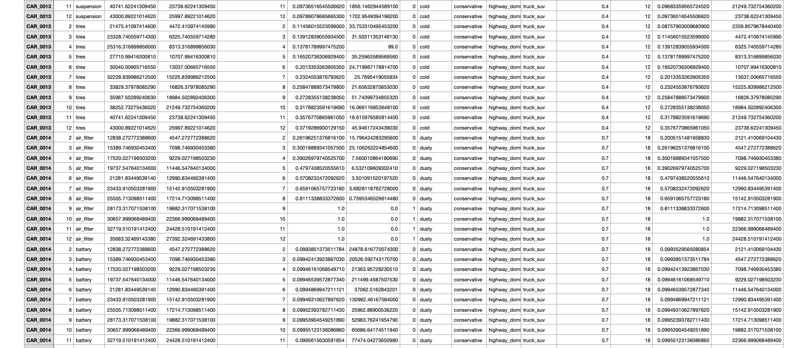
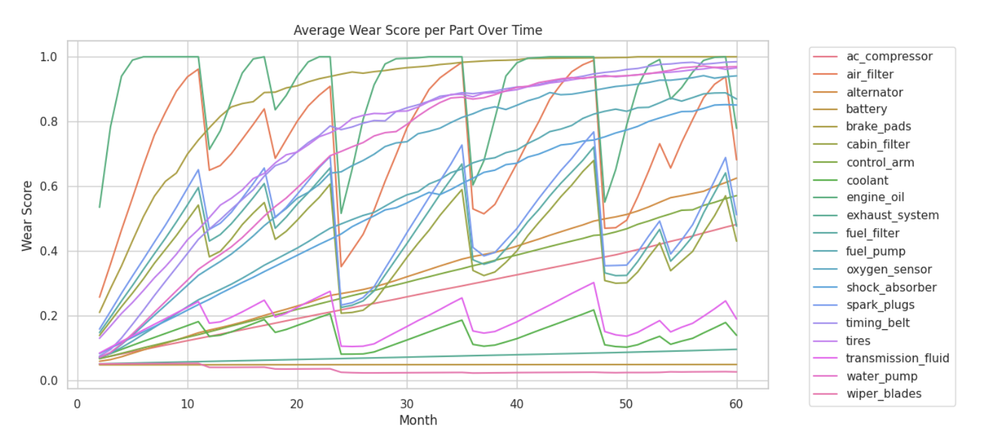
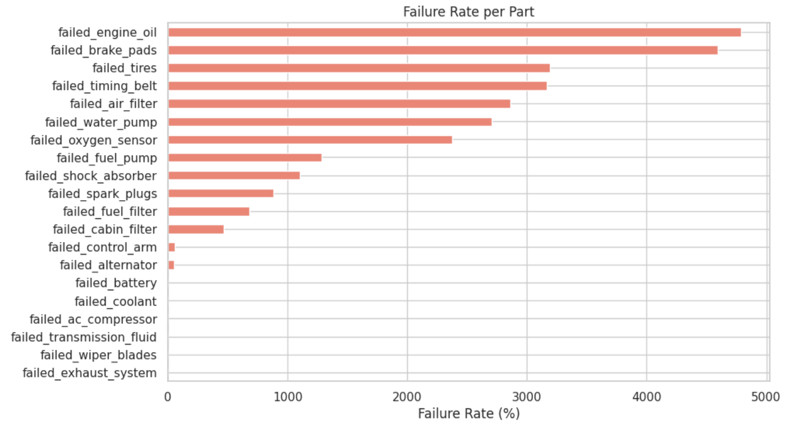

🚗 Carithm Synthetic Maintenance Dataset
High-Fidelity Vehicle Health Data — Built for Predictive Maintenance AI
The Carithm Synthetic Maintenance Dataset is a high-quality, fully synthetic dataset created to accelerate development in predictive maintenance, anomaly detection, and automotive machine learning. It simulates 10,000+ vehicles, 20 key components, and realistic driving behaviors across diverse environments.
Our dataset powers the exact AI model running inside Carithm Predictive — you can test how it performs in real time before buying. The web app uses this same dataset for vehicle health predictions and component diagnostics.
🔍 Key Features
- 10,000+ virtual vehicles across Sedan, SUV, and Hatchback types
- 20+ monitored components — from engine, transmission, and brakes to sensors
- Simulated environments: hot, cold, dusty, and moderate climates
- Driving styles: city, highway, and spirited use patterns
- Includes failure injection, maintenance actions, and health status logs
- Available in CSV and Parquet formats
- Fully anonymized and compliant for commercial ML use
📊 Dataset Preview
Here’s a visual look at the Carithm Synthetic Maintenance Dataset — showcasing vehicle data, component health, and the structure that powers Carithm AI’s predictive models.



🧠 Try the Dataset Live
You can interactively test how this dataset powers predictive insights by visiting our free demo:
See how each input: mileage, years owned, environment, and style directly influences AI-based part health predictions.
📘 Dataset Schema
| Field | Description |
|---|---|
| vehicle_id | Unique identifier for each car (e.g. car_001) |
| mileage_km | Odometer reading (integer) |
| years_owned | Number of years the vehicle has been owned |
| months_since_service | Months since last service |
| environment | hot / cold / dusty / mid |
| driving_style | city / highway / spirited |
| country_origin | Germany / Britain / Japan / USA / Korea |
| component_name | Engine, Battery, Brake Pads, etc. |
| component_health | 0 = healthy, 1 = failure |
| maintenance_action | repair / replace / inspect |
💡 Use Cases
- Train machine learning models for predictive maintenance
- Benchmark fault detection and health prediction algorithms
- Prototype dashboards and anomaly detection visualizations
- Academic research on synthetic automotive data
- Testing digital twin systems and automotive analytics tools
📦 What You Get
- Dataset files in CSV and Parquet format
- Detailed README and schema documentation
- Python notebook examples for loading and analysis
- Commercial license for ML and product development
❓ FAQ
Is this data real or synthetic?
This dataset is 100% synthetic, generated from mathematical models and automotive maintenance logic. It contains no real-world or personal data.
Can I use it for commercial projects?
Yes, the dataset comes with a commercial license suitable for research, product development, and AI startup projects.
What format is the data provided in?
Both CSV and Parquet formats are included. Each file is clean, ready-to-use, and includes clear column headers.
Can I request a larger dataset?
Yes, custom variants (e.g., 50k+ vehicles or more part types) are available upon request. Contact us at contact@carithm.ai.